4．二阶方程与黎卡蒂方程
二阶常微分方程早在1691年就在物理问题中出现了。詹姆斯·伯努利研究了船帆在风力下的形状问题，即膜盖问题，而且引出一个二阶方程
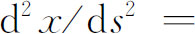
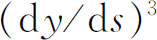
，这里s为弧长。约翰·伯努利在他的1691年的微积分教科书中处理了这个问题，并且证明它与悬链线问题在数学上是相同的。二阶方程后来在确定两端固定的弹性振动弦（例如小提琴的弦）的形状问题中也出现了。泰勒在研究这个问题时是在研究一个古老的主题。由毕达哥拉斯（Pythagoras）的信徒开端的数学和乐声的整个主题为中世纪的人们所继承，并且传到了17世纪。贝内代蒂（Giovanni Battista Benedetti）、贝克曼（Isaac Beeckman）、梅森、笛卡儿、惠更斯和伽利略在这方面都是杰出的，虽然没有什么新的数学成果值得在此一提。一根弦可以按许多模式，即二分之一、三分之一等模式振动；一根分成k部分振动的弦所产生的音是第k谐音或第k-1泛音（基音为第一谐音）。这些知识大部分是通过索弗尔（Joseph Sauveur，1653—1716）的实验工作到1700年在英国就已熟知了。泰勒(18)导出了一根伸张的振动弦的基频。他解出了方程
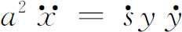
，这里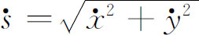
，而微商是对时间取的，并且给出了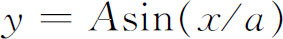
作为弦在任何时刻的形状，这里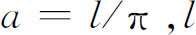
是弦的长度。泰勒关于基频的结果（按照现代的记号）是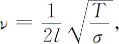
其中T为弦的张力，
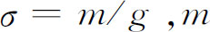
是单位长度的质量，而g为重力加速度。约翰·伯努利在努力研究弦振动问题时，在1727年给他的儿子丹尼尔·伯努利的一封信中和一篇论文中(19)，考虑了一根无重量的弹性弦，在弦上等间隔地放置着n个等质量的质点。当放置1，2，…，6个质点时，他推出了质点系的基频。（质点系还存在着别的振动频率。）约翰·伯努利认为在每个质点上的力是它的位移的-K倍，而且用分析方法解出了简谐运动方程
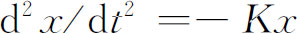
。然后他过渡到连续弦，从而证明在任何时刻弦的形状必定是正弦曲线（与泰勒一样），他又算出了基频。这里他解出了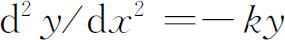
。约翰·伯努利和泰勒两人都没有研究过弹性振动体更高阶的振动模式。在1728年欧拉开始考虑二阶方程。他对这方面的兴趣部分地是由他的力学工作引起的。例如，他已经对摆在有阻尼介质中的运动进行研究，这就引到二阶的微分方程。他为普鲁士国王研究了空气阻力对投射体的影响。这里他接受并改进了英国人罗宾斯的工作，译了一个德文的译本（1745）。这个德文译本又翻译成英文与法文，并且为炮兵学所应用。
欧拉还考虑了一类二阶方程(20)，他利用变量替换把它们化到一阶方程。例如，他考虑了方程
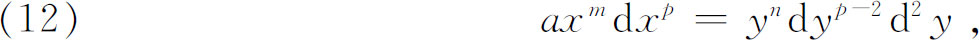
或它的微商形式
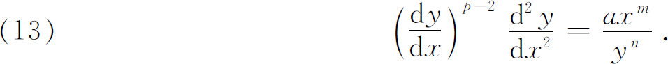
欧拉通过方程
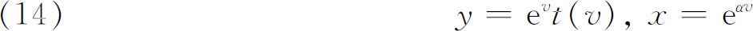
引进新的变量t与v，这里α是待定的常数。方程（14）可以看成x与y关于v的参数方程，这样就可计算
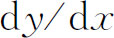
与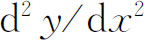
，而且代入（13）后就得到t作为v的函数的一个二阶方程。欧拉然后固定α，从而消去指数因子，这样v就不再明显地出现了。再作变换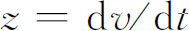
，就把二阶方程化到一阶的了。因为这个方法只适用于一类二阶方程，所以其细节就不值得再去深究。但是这部分工作是有历史意义的，因为它开始了二阶方程的系统研究，而且因为欧拉在这里引进了指数函数，我们将看到它在求解二阶与高阶方程时将起特别重要的作用。
丹尼尔·伯努利在1733年离开圣彼得堡之前，完成了一篇论文《关于用柔软细绳联结起来的一些物体以及垂直悬挂的链线的振动定理》(21)。他开始研究的是上端固定的悬链线，没有重量，但带着等间隔的重荷。当链线振动时，他发现质点系相对于通过悬挂点的垂线作不同模式的（小）振动。这些模式中的每一个都有各自的特征频率(22)。对于长度为l的均匀的振动悬链线，他给出了从最低点算起相距x处的位移y（图21.3）满足方程
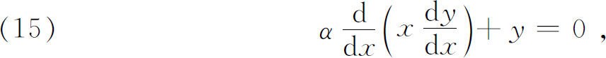
它的解是一个无穷级数，用现代的记号可表示成
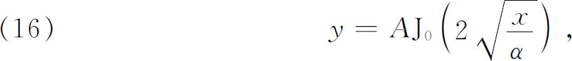
其中J0是零阶贝塞尔函数（第一类）(23)。而且α满足
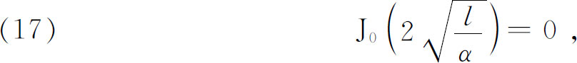
这里l是悬链的长度。他断定（17）有无穷多个根，而且这些根变得越来越小，最后趋向于0。他得到了这种α的最大值。对应于每一个α，就有一个振动的模式和一个特征频率。
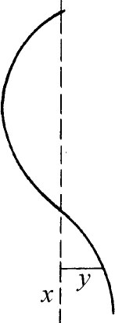
图21.3
他当时说：“从这个理论推导出符合于泰勒和我父亲建立的音乐弦理论将是不困难的……实验表明，在音乐弦中存在着类似于振动链的交点（节点）。”确实，这里丹尼尔·伯努利在认识弦振动的谐音或高阶模式方面超过了泰勒和他的父亲。
他关于悬链线的论文还讨论了非均匀厚度的振动链，那里他引进了微分方程
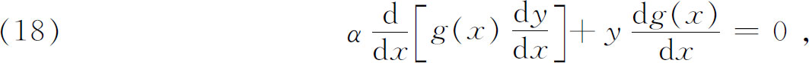
其中g（x）是链线的重量分布。对于
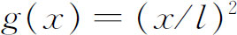
，他给出了一个级数解，用现代的记号可以把它写成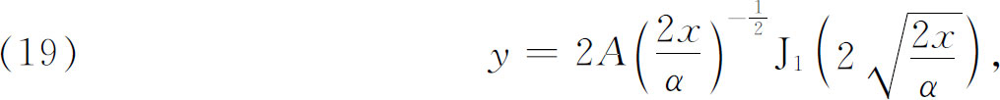
其中
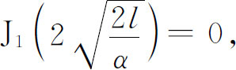
J1是第一类的一阶贝塞尔函数。
在丹尼尔·伯努利的解答中有两点失误：第一，不提位移是时间的函数，这样一来，他的工作在数学上就停留在常微分方程的范围；第二，不提他认识到的那些实在的简单运动模式（泛音）可以叠加成更复杂的运动。
在完成了一本以乐声为主题的著作《建立在确切的谐振原理基础上的音乐理论的新颖研究》（Tentamen Novae Theoriae Musicae ex Certissimis Harmoniae Principiis Dilucide Expositae，写于1731年，出版于1739年(24)）之后，欧拉在一篇论文《关于带有任意多个重量的柔软细绳的振动》（On the Oscillations of a Flexible Thread Loaded with Arbitrarily Many Weights）中紧跟丹尼尔·伯努利的工作(25)，欧拉的结果与丹尼尔·伯努利的结果是极为相似的，只不过欧拉的数学更为清楚。对于连续链的一种形式，即重力正比于
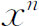
的特殊情形，欧拉求解方程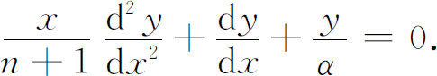
他推得级数解，用现代的记号就是(26)
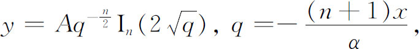
这里n是一般的。这样欧拉就引进了任意实指标的贝塞尔函数。他还求出了用积分表示的解
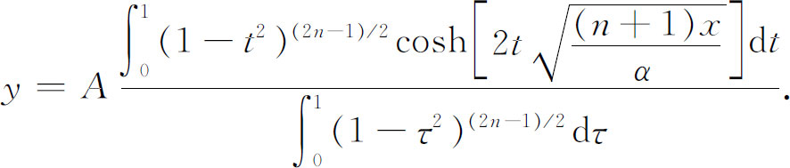
这恐怕是二阶微分方程的解用积分来表示的最早情形。
欧拉在1739年的一篇论文(27)中研究了谐振子的微分方程
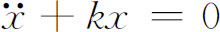
以及谐振子的强迫振动方程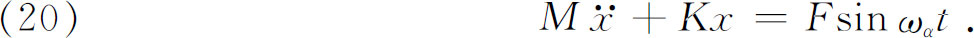
他用积分法得到了解，而且发现（实际上是重新发现，因为别人早已发现过了）共振现象；就是说，如果ω是振子的自然频率
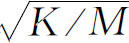
（它在F＝0时得出），则当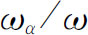
趋于1时，强迫振动的振幅无限变大。在试图建立声在空气中传播的模型时，欧拉在他的论文《关于脉动波通过弹性介质的传播》（On the Propagation of Pulses Through an Elastic Medium）(28)中考虑了n个质量为M的质点系，设它们放置在一水平线PQ上，并且用相同的弹簧（无重量）连接起来。设讨论的运动是纵向的，即运动沿着PQ进行。对于第k个质点，他得到
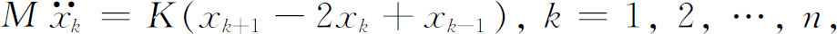
这里K是弹簧常数，而
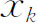
是第k个质点的位移。对每个质点，他求出精确的特征频率以及一般解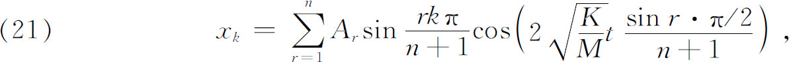
这里
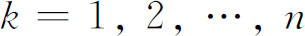
。从而他不仅求得了每个质点个别的模式，而且还求出了作为简谐振动模式叠加而成的质量的一般运动。可能出现的特定模式依赖于初始条件，就是说，依赖于各质点如何进入运动。所有这些结果也可用受荷弦的横向运动（垂直于PQ）来解释。某些已经研究过的方程，例如伯努利方程，是非线性的，即方程中出现变量y，y′和y″（如果它出现的话）的二次或更高次的项。在这种一阶方程中，有几个具有特殊的重要性，因为它们与线性二阶方程密切相关。在常微分方程的早期历史中，非线性的黎卡蒂方程
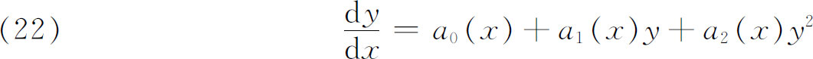
博得了极大的注意。
黎卡蒂方程是由研究声学的威尼斯的黎卡蒂（Jacopo Francesco Riccati，1676—1754）伯爵引进的，它受到重视是因为可用来帮助求解二阶常微分方程。他考虑了曲率半径只依赖于纵坐标的曲线而得到(29)
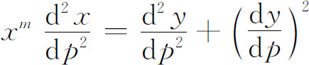
［黎卡蒂写成
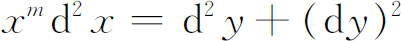
］，这里必须理解，x与y是依赖于p的。作变量替换后，黎卡蒂得到一阶方程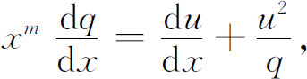
然后他假定q是x的幂函数，例如
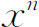
，从而化成形式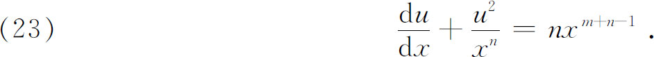
于是他说明，对于特殊的n，如何用常微分方程的分离变量法求解（23）。后来，伯努利们确定了n的另外一些值，使得相应的（23）可用分离变量法求解。
黎卡蒂工作之所以值得重视，不仅由于他处理了二阶微分方程，而且由于他有了把二阶方程化到一阶方程的想法。用这种或那种手段降低常微分方程的阶，这种想法将是处理高阶常微分方程的主要方法。
欧拉在1760年(30)考虑了黎卡蒂方程
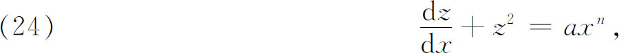
而且证明若已知一特殊积分v，则变换
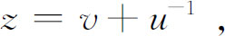
把方程化成线性的。而且，若已知两个特殊积分，则求解原方程的问题就可化为求积分的问题。
达朗贝尔(31)最先考虑黎卡蒂方程的一般形式（22），而且对这种形式采用了“黎卡蒂方程”这一名称。他由
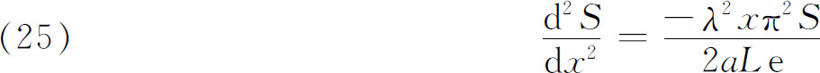
开始，令
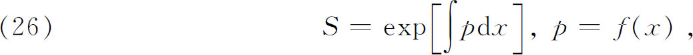
由此他得到形如（22）的p（作为x的函数）的方程。